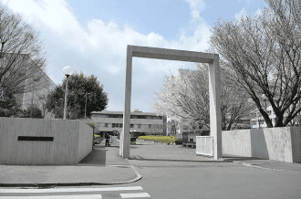
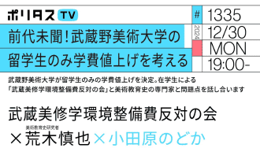

VISIONとその背景や状況を確認してみよう
先入観や思い込みを減らすことも兼ねて、これから意思を考えるための材料を関連記事を起点に探索してみましょう。
武蔵野美術大学は2025年度から留学生に対して年間36万3000円の増額をする
関連記事
留学生の修学環境整備費の新設について | 武蔵野美術大学
https://www.musabi.ac.jp/news/20240711_03_02/
大学は留学生を「稼ぐ手段」にしていないか 武蔵野美大の「36万円整備費」発表に学生ら「留学税だ」の声：東京新聞デジタル

https://www.tokyo-np.co.jp/article/341386
武蔵野美術大学で学生らがデモ。留学生に対する学費値上げ決定に混乱広がる

https://www.tokyo-np.co.jp/article/341386
前代未聞！武蔵野美術大学の留学生のみ学費値上げを考える（12/30）

https://www.youtube.com/watch?v=byMv2a66yNk